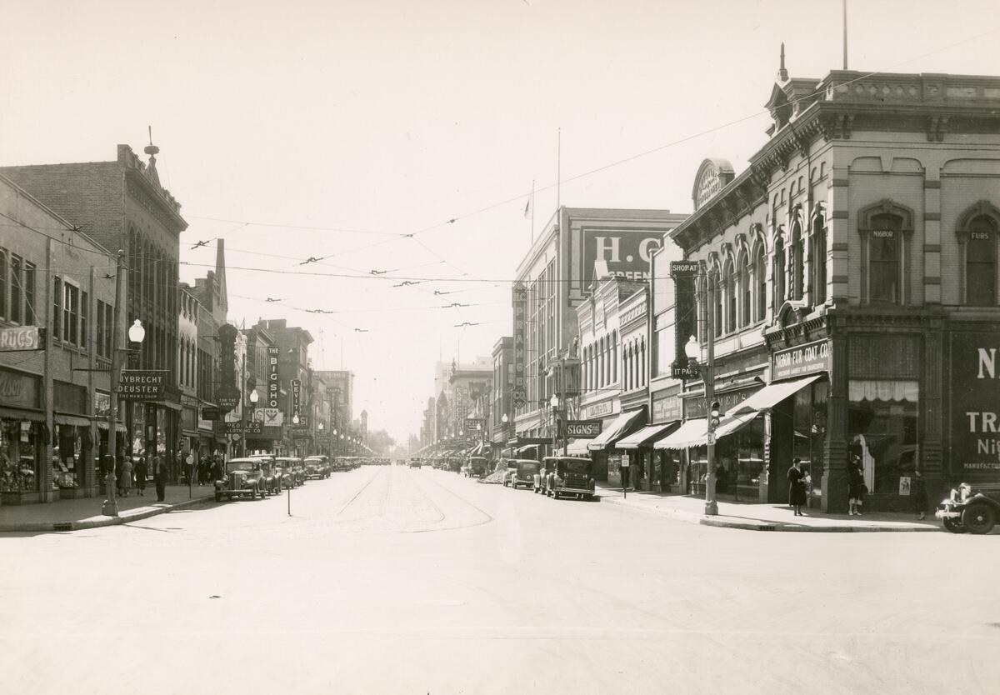
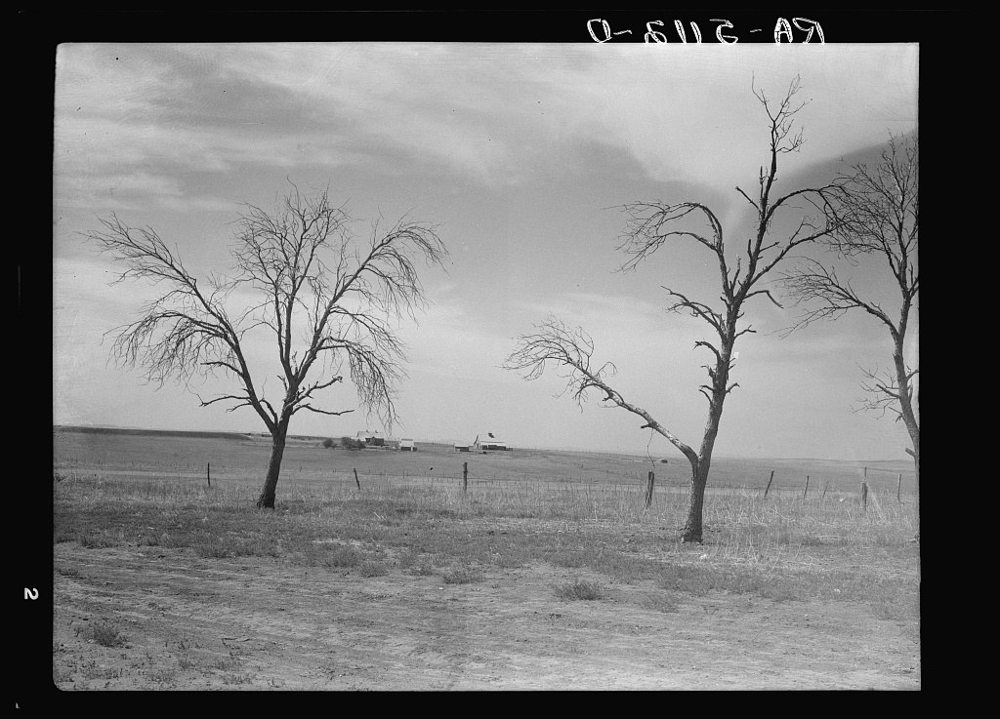
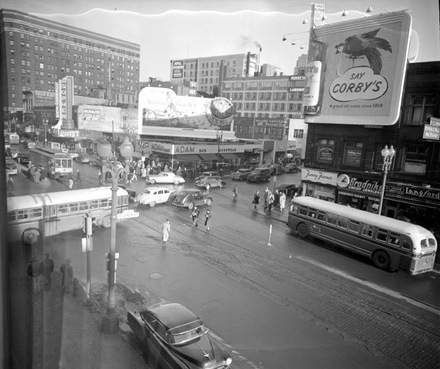
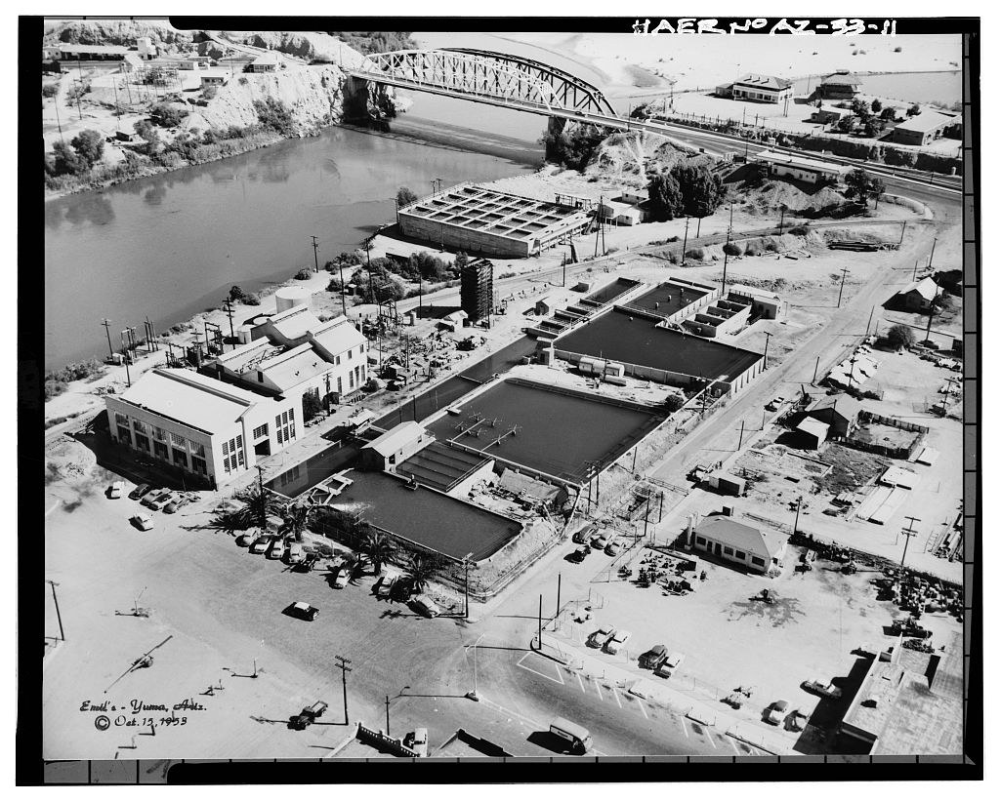
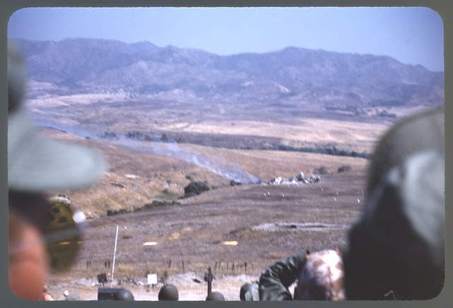
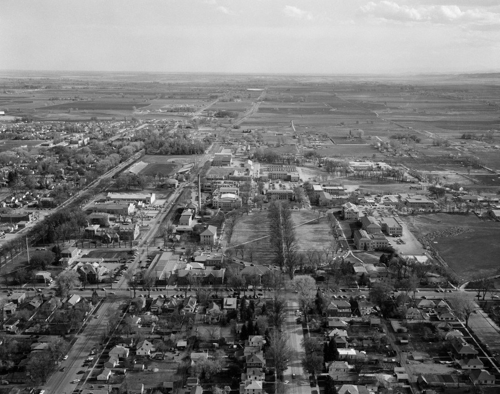
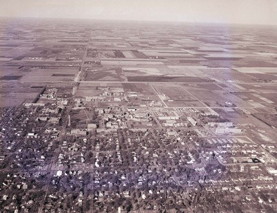
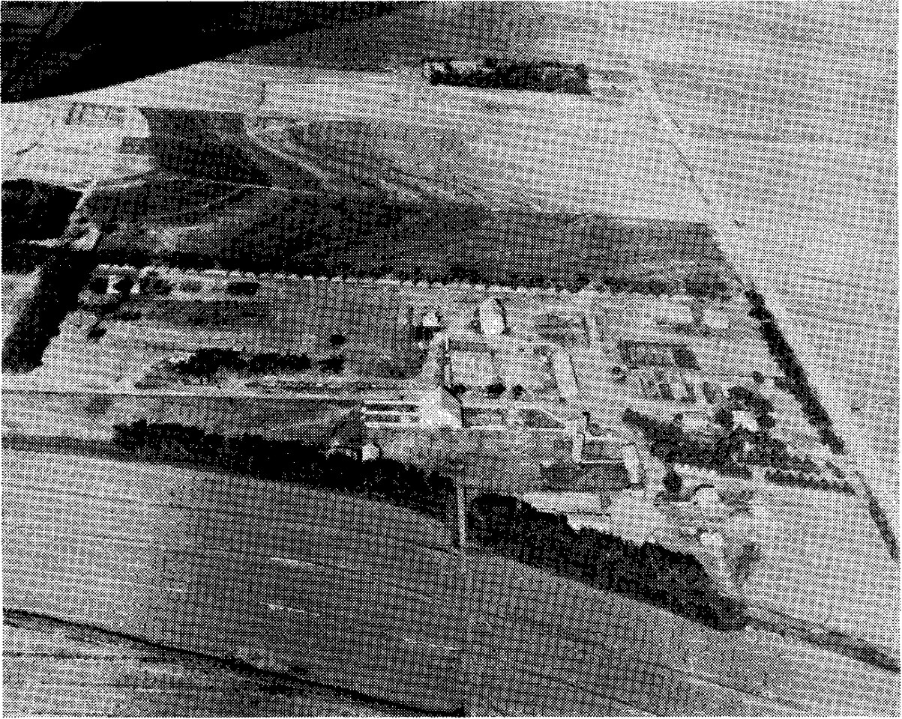
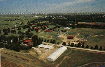

← Back to Bill’s story and map
Street scenes, campuses, a military base, and research stations from around the years in his story. Photograph dates and publication dates are identified separately. The Grant County scene supplies regional childhood context; his exact Colorado State enrollment dates are still unknown.
Local copies and credits are preserved with the downloadable source collection. Each photograph retains its own copyright or license.
More views of these places, including Elgin’s streets in 1952 →
Photograph: 1930

Downtown Green Bay in 1930, the year before Bill was born there.
J. Aregi / Wisconsin Historical Society · No copyright — United States
Source and attribution · No copyright — United States · Download photograph
Wisconsin Historical Society catalog W013SP4, legacy image WHi 31928, PF Green Bay.257. The source dates the photograph to 1930 and labels it No Copyright - United States. Web copy resized without cropping.
Photograph: 1936-07

Rural Grant County in July 1936—the county where Bill spent part of his childhood. This is a regional view, rather than an identified Stegmeier home.
Arthur Rothstein / Library of Congress · No known restrictions
Source and attribution · No known restrictions · Download photograph
FSA/OWI collection, LC-USF34-005112-D; digital ID fsa.8b28112. The original catalog locates this farm only in Grant County. No claim is made that it is Bill’s family home or in the town of Elgin. Web copy resized without cropping.
Photograph: 1951-11-08

Minneapolis on November 8, 1951, about six weeks before Bill entered the Marines there.
Michael Donovan · CC BY-SA 2.0
Source and attribution · CC BY-SA 2.0 · Download photograph
The Wikimedia Commons record dates this photograph to November 8, 1951, and credits Michael Donovan under CC BY-SA 2.0. It records a verified Flickr license check made when the image was copied in 2013. Web copy resized without cropping.
Photograph: 1953-10-15

Yuma’s riverfront on October 15, 1953, the same year Bill and Jean married in the city.
Emil Eger / Library of Congress, HAER
Source and attribution · Source rights notice · Download photograph
HAER ARIZ,14-YUMA.V,1--11; digital ID hhh.az0293/photos.041618p. The original catalog dates Emil Eger’s photograph to October 15, 1953. LOC notes that copied photographs may have rights restrictions; this historical reproduction is a contextual illustration in the biography and grants no additional reuse rights. Web copy resized without cropping.
Photograph: 1952

Marines watching a training demonstration at Camp Pendleton in 1952, during Bill’s service years.
USMC Archives / Ronald Trayer Collection · CC BY 2.0
Source and attribution · CC BY 2.0 · Download photograph
Final Protective Line Demonstration, Camp Pendleton, 1952, Ronald Trayer Collection COLL/5635, Archives Branch, Marine Corps History Division. The publisher identifies it as an official USMC photograph and displays a CC BY 2.0 license. It illustrates the base during his service; Bill is not identified in the photograph. Web copy resized without cropping.
Photograph: 1955-05

The Fort Collins campus in May 1955, when the university was known as Colorado A&M. Bill’s exact enrollment and degree dates remain unconfirmed.
CSU Libraries, University Historic Photograph Collection · © Colorado State University
Source and attribution · © Colorado State University · Download photograph
Unidentified photographer; UHPC_B6184G, University Historic Photograph Collection, Series 16, Campus Buildings and Scenes. The catalog dates the image May 1955 and states that Colorado State University owns the rights. Contextual historical illustration; no broader reuse license is asserted. Web copy resized without cropping.
Photograph: 1968-10

South Dakota State’s campus in October 1968, shortly before the February 1969 report documenting Bill’s return to graduate study.
South Dakota State University, Hilton M. Briggs Library · © South Dakota State University
Source and attribution · © South Dakota State University · Download photograph
Open PRAIRIE Aerial Photographs collection, identifier 1968-1599-PA01. Creation date is October 1968; the repository’s copyright notice is dated 2015, which is not the exposure date. Contextual historical illustration; no broader reuse rights are granted. Web copy resized without cropping.
Photograph: Photograph date unrecorded; published June 1957

The Garden City station in its 1957 anniversary history, published one year before Bill arrived. The photograph’s exact date is unrecorded.
Kansas State University · © Kansas State University
Source and attribution · © Kansas State University · Download photograph
Kansas Report 7, Fifty Years of Progress: Garden City Branch, Kansas Agricultural Experiment Station (June 1957), back-cover photograph. Publication year is documented; exposure date is not stated. Contextual illustration from the original station history; copyright remains with the publisher. Web copy resized without cropping.
Photograph: Photograph date unrecorded; published September 1984

The Hays station in a September 1984 brochure, during Bill’s years there. The photograph’s exact date is unrecorded.
Kansas State University · © Kansas State University
Source and attribution · © Kansas State University · Download photograph
Fort Hays Branch Station, Special Publication, September 1984, PDF page 3. The upper photograph of the preserved composite is used for the web view. Publication date is established; exact exposure date is not given. Contextual illustration; copyright remains with the source publisher. Upper aerial photograph extracted from the composite printed layout; no photographic content was retouched.